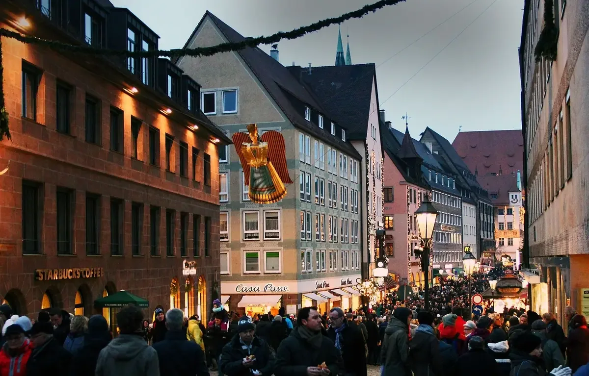
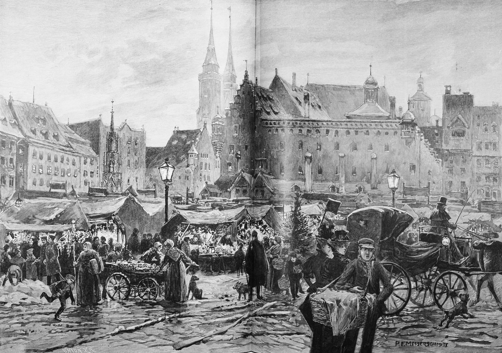
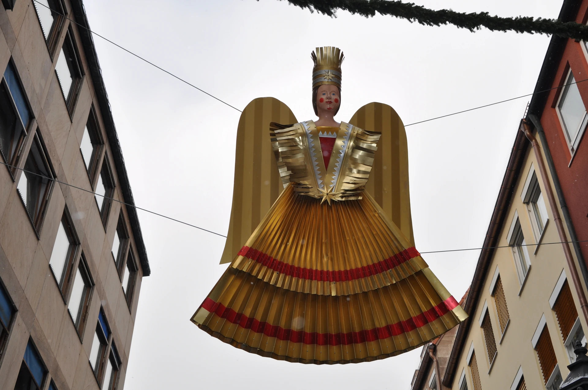
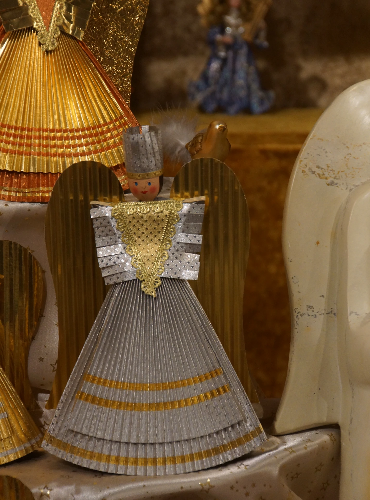

아직 펼치지 않은 카드손으로 빚은 성탄 장식 · 3뉘른베르크의 금박 천사사람들 머리 위의 금빛 천사, 누가 처음 만들었을까요?사람들 위에 금빛 천사가 떠 있어! 누가 만들었을까?
19세기부터 오늘까지독일 바이에른 · 뉘른베르크 성탄 시장
뉘른베르크의 금박 천사
독일 뉘른베르크의 성탄 시장. 19세기에는 많은 집 성탄 나무 꼭대기에 금박 천사가 올랐어요. 1897년 토마스의 날 시장을 둘러본 뒤, 거리 위 천사의 옷을 하나씩 눌러 살펴보세요.
뉘른베르크 시장 거리 위에는 금빛 천사가 떠 있어. 천사 옷은 무엇으로 만들었을까? 하나씩 눌러 보자!
검수 전 시안이에요(기준서 1판). 천사를 지은 사람과 재료는 뉘른베르크시와 관광청, 성탄 시장 누리집, 천사 공방 소개를 따랐어요. 전해지는 이야기는 그렇다고 밝혔고, 상상은 ‘눈 감고 상상해 보기’에만 썼어요.
시안 확인용카드 단계 미리 보기
1
1897년, 토마스의 날 시장
1897년 독일 잡지 『가르텐라우베』에 실린 그림이에요. 제목은 「토마스의 날, 뉘른베르크의 아기 예수 시장」이에요.
성탄을 며칠 앞둔 토마스의 날(12월 21일)이면, 다른 고장 사람들도 선물을 사러 뉘른베르크 성탄 시장에 왔어요.

그 무렵 뉘른베르크 사람들에게 금박 천사는 성탄에 꼭 있는 장식이었어요. 많은 집 성탄 나무 꼭대기에 금박 천사가 올랐어요.
그림 오른쪽에 성탄 나무를 들고 가는 사람이 보여요. 그 나무 꼭대기에는 무엇이 올라갔을까요?
토마스의 날 시장에서 금박 천사를 하나 샀어요. 어디에 둘까요?
옛날 뉘른베르크 시장이야. 나무를 들고 가는 사람도 있어!
물어보기저 나무 꼭대기에는 무엇이 올라갈까?
2
거리 위 천사의 옷 살펴보기
뉘른베르크에 살던 인형 장인과 금속을 두드리는 장인들이 이 천사 인형을 지었어요. 천사의 옷은 아주 얇게 두드린 놋쇠판이었어요.
만지면 바스락거리는 이 놋쇠판을 ‘라우슈골트’라고 해요. 이 재료가 천사에게 ‘라우슈골트엥겔’, 곧 금박 천사라는 이름을 주었어요.
거리 위 금박 천사의 옷을 하나씩 눌러 보세요. 무엇으로, 어떻게 지었을까요?

뉘른베르크 성탄 시장 거리 위의 금박 천사, 2009년 · 사진: Susanne Winter · CC BY-SA 2.0 · 위키미디어 공용
그림 위의 숫자나 아래 번호를 눌러 보세요.
천사의 옷을 다 살펴봤어요. 바스락거리던 얇은 놋쇠가 천사에게 이름을 주었어요.
오늘의 금박 천사는 금속이 아니라 금빛 종이로 지어요. 한 공방은 한 해에 800~2,000개를 손으로 짓는데, 하나에 두세 시간씩 걸린대요.
천사 옷은 아주 얇은 금빛 판으로 만들었대. 만지면 바스락!
물어보기천사 옷에서 가장 먼저 눈에 띄는 건 뭐야?
눈 감고 상상해 보기
고개를 들어요. 건물 사이 줄에 매달린 금빛 천사가 겨울바람에 살짝 흔들려요. 아래에서는 생강 과자와 따뜻한 포도주 냄새가 올라와요. 얇은 금빛 치마가 바스락 소리를 낼 것만 같아요.
눈을 감아 봐. 머리 위에 금빛 천사가 흔들흔들. 맛있는 과자 냄새도 나. 천사 치마가 바스락!
나의 자리
지어낸 이야기인 줄 알면서도 마음이 움직인 적이 있나요? 사람들은 왜 그런 이야기가 필요했을까요?
나만의 천사 장식을 만든다면, 누구를 생각하며 만들고 싶어?
마음에 닿는 한 줄을 고르거나 직접 써 보세요. 한 줄을 남기면 이 자리의 도장이 찍혀요. 이 기기에만 저장돼요.
더 깊이
궁금한 칸만 펼쳐 읽어도 괜찮아요.
알고 보면
누가 지었나 뉘른베르크에 살던 인형 장인과 금속을 두드리는 장인들이 천사 인형을 짓고, 아주 얇게 두드린 놋쇠판으로 옷을 입혔어요.
종이로 바뀐 옷 뉘른베르크 관광청은 19세기 중반부터 색종이가, 그 뒤로는 금속 박이 놋쇠판을 대신했다고 소개해요. 오늘 한 공방은 퓌르트에서 만든 알루미늄 종이와 풀로 천사를 지어요.
크기도 가지가지 그 공방은 2센티미터짜리부터 1미터가 넘는 것까지 열두 가지 크기로 천사를 지어요.
떠돌던 시장 19세기 끝 무렵 뉘른베르크 성탄 시장은 힘을 잃고 큰 광장을 떠나 여러 곳을 옮겨 다녔어요. 1897년 그림은 그 무렵의 모습이에요.
기록마다 다른 점
언제부터 있었나 뉘른베르크 성탄 시장 누리집은 금박 천사의 뿌리를 16세기로 봐요. 뉘른베르크 관광청은 1733년에 처음 글로 적혔다고 해요. 앞면에서 본 것처럼, 금박 천사가 그려진 가장 오래된 그림은 1767년 것이에요.
팔이 있었나 한 공방은 처음 천사에게 팔이 없었다고 하고, 관광청은 천사가 옷 윗자락 아래로 팔을 접어 넣었다고 소개해요.
딸을 잃은 장인 이야기 시장 누리집도 이 이야기를 ‘전설’이라고 불러요. 한 공방은 장인의 이름을 멜히오르 하우저라고 전하면서도, 정말인지는 아무도 모른다고 적었어요.
직접 가 보기

확인한 날 · 2026년 11월 18일 · 바뀌기 쉬운 정보라 정기적으로 다시 확인해요
2026년 뉘른베르크 성탄 시장은 11월 27일(금)부터 12월 24일까지 하우프트마르크트(중앙 광장)에서 열려요. 날마다 오전 10시부터 밤 9시까지, 24일은 오후 2시까지예요.
가장 큰 금박 천사는 시장 남쪽 입구인 플로벤호프 거리 높이 매달려 손님을 맞아요. 작은 천사들은 성탄 장식 가게에서 볼 수 있어요.
천사의 옷 다 살펴보기 금박
거리 위 금박 천사의 여섯 곳을 모두 찾아 읽으면 카드에 금박이 입혀져요.
그림 속 여섯 곳을 모두 찾아 읽기
시장에서 산 천사 채색
둘 가운데 하나만 해도 카드가 채색돼요.
토마스의 날 시장에서 산 금박 천사를 어디에 둘지 고르기
아이와 함께 ‘영화처럼 보기’를 끝까지 보기
근거 보기 (7)
- 뉘른베르크시 『뉘른베르크 오늘』 77호, 안나마리아 뵈켈 「바쁜 하늘의 존재」 — 인형 장인과 금속 장인, 얇게 두드려 바스락거리는 놋쇠판과 이름, 19세기 성탄 나무 꼭대기의 천사, 토마스의 날 시장, 19세기 끝 시장의 쇠퇴
- 뉘른베르크 성탄 시장 공식 누리집: 금박 천사 — 놋쇠박에서 온 이름, 지금은 종이, 18세기 프랑켄 농부 옷, 전설, 16세기 뿌리, 남쪽 입구의 가장 큰 천사
- 뉘른베르크 관광청: 금박 천사 — 1mm보다 얇은 놋쇠, 1733년 첫 기록, 19세기 중반 색종이와 금속 박, 팔을 접어 넣은 모습, 플로벤호프 거리의 가장 큰 천사
- 크바르티어 뉘른베르크: 인쇄소 페제의 천사 공방 — 0.01~0.03mm 놋쇠, 종이 반죽·나무 몸, 왕관, 주름 치마와 빨간 앞치마, 팔 없는 인형, 접기, 나무 머리, 두세 시간, 한 해 800~2,000개, 열두 가지 크기
- 뉘른베르크시: 2026 성탄 시장 날짜와 여는 시간(보도 자료)
- IamExpat: 독일의 토마스의 날 — 12월 21일
- 위키미디어 공용: 『가르텐라우베』 1897년 그림 설명 「Ein Kindleinsmarkt am Thomastag zu Nürnberg」
그림·사진·소리 출처
‘처음 만나는 기독교 문화’의 깊은 카드예요. 실제 인물의 사진은 쓰지 않았어요. 카드 단계와 남긴 글은 이 기기에만 저장돼요.